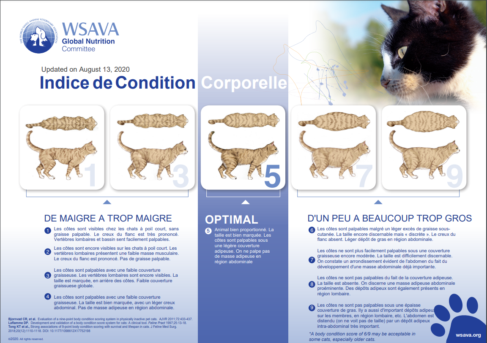

Le chat est un animal grignoteur, c’est-à-dire qu’il ne se contente pas d’un ou deux gros repas par jour comme le chien, mais qu’il a besoin de manger régulièrement de petites quantités de croquettes au fil de la journée. Néanmoins, il ne s’agit pas lui laisser une quantité aléatoire de nourriture à disposition, mais de répartir la ration nécessaire pour couvrir ses besoins nutritionnels à sa portée, sans excès ni manque. En effet, la quantité de nourriture est un critère essentiel pour le bien-être et la santé du chat. Or, il faut savoir que la quantité dont un chat a besoin varie en fonction de plusieurs éléments, comme sa race, son poids, son état de santé, ses dépenses physiques, et qu’elle évolue au cours de sa vie en fonction de son âge.
Tout simplement parce que lorsque l’alimentation est distribuée en trop grandes quantités, le chat ingère un apport calorique trop important, ce qui provoque inévitablement un surpoids, voire de l’obésité. Or, ces problèmes sont loin d’être anodins et ne doivent pas être réduits à de simples désagréments esthétiques, car ils sont à l’origine de nombreux problèmes de santé graves. En effet, les chats souffrant de surpoids ou d’obésité peuvent développer du diabète, souffrir de troubles cardiovasculaires et de pathologies osseuses et articulaires. Or, sur 11 millions de chats en France, près de 15 % sont en situation d’obésité, soit 1,6 million environ, sans compter ceux qui souffrent d’un surpoids.
Pour savoir si votre chat est convenablement nourri, il suffit dans un premier temps de l’observer. Sa silhouette doit être harmonieuse, sans graisse palpable au niveau de son abdomen. Néanmoins, il faut également éviter la maigreur. Si vous sentez sa colonne vertébrale ou ses côtes lorsque vous le caressez, c’est qu’il ne mange pas suffisamment – excepté lorsque l’animal est malade. Par ailleurs, vous pouvez peser votre chat régulièrement – à raison d’une fois par mois en moyenne – pour vérifier que son poids se maintient. Faites évaluer son poids idéal par votre vétérinaire puis faites en sorte de le respecter. Il est indispensable d’offrir à votre matou une alimentation de qualité, équilibrée et saine. Si la quantité est une notion essentielle, la qualité l’est tout autant.
Pour cela, nous vous recommandons vivement d’acheter l’alimentation de votre chat chez le vétérinaire ou dans une animalerie. Évitez les produits des grandes surfaces. Certes, ils sont moins coûteux à l’achat, mais ils sont composés d’ingrédients de mauvaise qualité (protéines issues de déchets animaliers et non de morceaux de viande par exemple) et mal proportionnés. Peu rassasiants, votre chat a besoin d’en manger en plus grande quantité pour être rassasié, ce qui augmente le risque d’obésité, mais aussi de carences nutritionnelles, causant ensuite la survenue de nombreuses autres maladies. Vous aurez donc bien plus de frais vétérinaires à assumer. À l’inverse, une alimentation de qualité coûte plus cher à l’achat, mais un sac de croquettes vous durera bien plus longtemps et permettra de couvrir les besoins nutritionnels de votre petit compagnon au quotidien. Composée d’ingrédients de premier choix, elle veille naturellement à la santé et au bien-être de votre petit minet.
Le chaton est en pleine phase de croissance, une période déterminante pour son développement. Il lui faut donc ingérer chaque jour une certaine quantité d’alimentation afin de recevoir tous les nutriments dont son organisme a besoin, notamment pour construire et renforcer son ossature et sa musculature. Le chaton a des besoins alimentaires importants. Vous disposez de plusieurs solutions pour les lui distribuer, en vous adaptant à ce qui convient le mieux à votre petit minet : une alimentation à disposition en permanence, en lui versant en une fois la quantité nécessaire à la journée ; un accès à sa ration pendant une durée déterminée ; la distribution de repas fractionnés en fonction de son âge, c’est-à-dire (en fonction des recommandations du fabricant du produit) : pour un chaton de 4 à 6 mois : 4 repas de 55 g à 60 g par jour ; pour un chaton de 6 à 8 mois : 3 repas de 60 g à 75 g par jour ; pour un chaton de plus de 8 mois : 2 repas de 100 g par jour. Il est recommandé de donner à votre chaton une alimentation dédiée pour cet âge. Pour respecter les quantités nécessaires, qui peuvent varier en fonction des produits, référez-vous systématiquement à la notice du fabricant.
Entre 10 et 12 mois, parfois avant selon les conseils de votre vétérinaire, il est temps de passer à une alimentation adulte. Les besoins nutritionnels de votre petit compagnon ont en effet évolué. Soulignons toutefois que votre animal est unique. En conséquence, si vous devez vous baser sur les données recommandées sur l’emballage des croquettes, une petite marge d’adaptation est possible pour répondre aux besoins de votre chat. En effet, si votre matou se dépense peu, il a besoin de moins manger qu’un minet qui se dépense quotidiennement dehors. La phase adulte de la vie de votre chat est sujette à de nombreuses variations qui influent sur la quantité de nourriture dont il a besoin. Quelle quantité de nourriture pour un chat adulte en bonne santé ? Un chat adulte en bonne santé qui ne mange que des croquettes a besoin d’une certaine ration en fonction de son poids.
Un chat de 3 kg a besoin d’environ 40 g de croquettes par jour, mais il faut compter 50 g pour un chat de 4 kg ou encore 60 g pour un chat de 5 kg. S’il est nourri en revanche de croquettes et de pâtée, il faudra lui répartir ses rations différemment, par exemple à raison de 10 g de croquettes et 1 sachet et demi de pâtée par jour pour un chat de 3 kg, de 20 g de croquettes et 1 sachet ½ de pâtée par jour pour un chat de 4 kg ou encore de 15 g de croquettes et de 2 sachets de pâtée par jour pour un chat de 5 kg.
Il s’agit néanmoins d’indications, qui peuvent varier en fonction des recommandations de votre vétérinaire. Comme pour le chaton, vous pouvez lui distribuer son alimentation de différentes manières : en libre-service, qui est la solution la plus adaptée aux chats capables de se rationner seuls ; sous forme de repas, à raison d’une ration le matin et d’une autre le soir ; sous forme de collation, sous forme de petites portions réparties sur la journée, une solution qui convient avant tout aux matous souffrant de surpoids. Hormis ces recommandations pour un chat adulte en bonne santé, il est nécessaire d’adapter les quantités en fonction des événements qui sont susceptibles de survenir au cours de la vie de votre matou.
